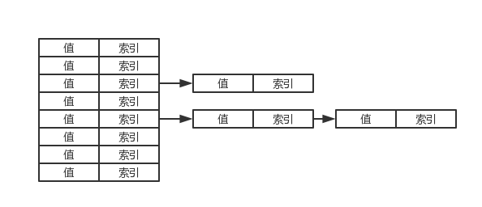
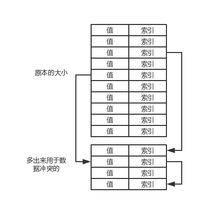

¶散列表是什么
散列就是把数据的排列方式用该元素的值或者关键字生成的函数确定（用一个规则确定元素的位置）的一种算法。
- 元素存储的地方叫
散列表 - 位置由
散列函数确定. - 散列表中的位置称为
单元（cell）或者桶（bucket）.
举个栗子：英文字母有26个（小写）,规则如果是a->0 z->25的话那么每个字母都有对应的位置。
散列表的时间复杂度是O(1)。空间复杂度是O（n）。
完美散列函数:每个元素都映射到唯一的位置上的函数。（是不存在的）
负载因子:0-1 当已占空间占全部空间的 比例大于负载因子时，改变总的空间大小。
¶散列函数有哪几种常有的
¶余数法 （掌握）
|
|
用值的正整数除于正整数p作为给定元素的索引。
用于处理未知集合的关键字 比较好。
¶折叠法
实现方式：
- 1、把关键字分割成几个组成部分，使得最后一部分除外的其他
部分的长度与索引的长度相等。 - 2、如果是
平移折叠法，就将他们全部加起来用作创建索引。 - 2、如果是
边界折叠,将关键字的某一个部分相加前进行反转（卧槽不是很无聊吗。。。）
¶平方取中法
实现方式： 关键字与自己相乘，然后运用抽取法从平方值的中间抽取适当位 的数字作为索引
平方的目的就是为了防止负数。
在处理二进制字符串表示时效果号。
¶基数转化法
实现方式： 将关键字转化成另一种数字进制，然后运用余数法，把转化后的值除于散列表大小。
¶数字分析法
就是瞎分析一波，合理的将关键字放到各位置上。~(>_<)~
¶长度相关法
关键字和关键字的长度用某种方式绑定起来生成索引本身，或者中间值。结合其他的方法
¶解决冲突
把大小设置为预期元素的150%。如果大小未知的话就要考虑设置负载因子动态的改变散列表大小。
¶链地址法（这个很重要hashMap之类的基本都是这个实现的）
用于解决冲突的链地址法。只是在概念上把散列表当作是集合的列表，而不是独立的列表。

- 方法一：
让保存散列表的数组大于散列表的单元数，多余的作为溢出区，存储与散列表相关的链表。（数组同时了一个元素 以及下一个元素的索引）

不好的影响是后面的查找和插入 都变成了O(n).
- 方法二：
使用链接，当第二个元素映射到特定桶时，创建一个新的Node，将现有的next指向新的节点。新节点的指针指向null。（跟链地址的一个图很像）
- 方法三：
将散列表中的每一个位置作为一个指针 —— >指向一个集合 .将散列表的每一个位置用更高效的集合去保存（如平衡二叉树）.
¶开发地址法
开发地址法：在散列表中寻找一个空位，（而不是用初始散列的位置）。
- 方法一 ：线性探测法。
如果一个元素散列到位置p而p已经被占用了。就尝试位置（p+1）%s (s表示散列表大小);如果还是被占用了继续第一个（p+…n）%s。如果没有了就扩容或者抛出异常
- 方法二：二次探测法（这个很重要）
如果有冲突就用下面的公示进行探测填入
|
|
I (1—>s-1)；
就是大概 p, p +1 ,p-1,p+4 ,p-4,p+9,p-9 …
主要是值比较分散。
- 方法三：
双散列法。当第一个散列函数冲突时，采用第二个散列函数来解决冲突。